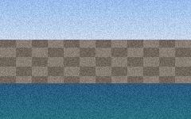

Two figures describe the quay. The first is a survey photograph of the sea wall; the second is a bar chart of monthly landings.

The sea wall was rebuilt in two stages. Landings rose after the second stage was finished, as the chart below shows.
The photograph and the chart are reproduced for the harbor register only.